Guild Bulwark
Approved for animation: K06 Road Escort.
Shield Knight studies
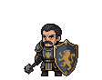
K03 Lion Guard
A dark moustache and the Shield Knight’s gold lion.
PNG · LibreSprite
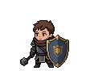
K06 Road Escort
A young mace-bearer with a rust-red neck scarf.
PNG · LibreSprite
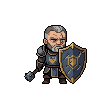
K11 Battle-worn
A white-bearded veteran behind a scratched shield.
PNG · LibreSprite
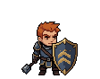
K14 Twin Chevron
A red-haired escort with two ochre chevrons on his shield.
PNG · LibreSprite
References sent to PixelLab
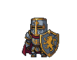
Shield Knight
58 px tall
Guild Swordsman
58 px tallBrowse the other shield-bearers
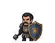
K01 Black Mantle
Dark swept hair and a short blue tabard.
PNG · LibreSprite
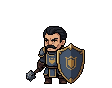
K02 Gate Warden
Heavy brows and a squared breast tab.
PNG · LibreSprite
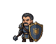
K04 Crossbelt
A dark-haired guard with a diagonal baldric.
PNG · LibreSprite
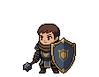
K05 Wool Scarf
A brown-scarfed guard with a simple chest device.
PNG · LibreSprite
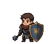
K07 Curly Recruit
A curly-haired recruit carrying the broad blue shield.
PNG · LibreSprite
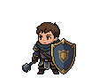
K08 Blue Scarf
A young guard with a dark blue scarf and leather baldric.
PNG · LibreSprite
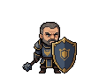
K09 Old Watch
A close-cropped veteran with a full beard.
PNG · LibreSprite
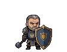
K10 Silver Guard
A grey-haired veteran with a pale forelock.
PNG · LibreSprite
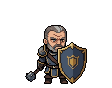
K12 Grey Captain
A grey-haired patrol captain with a leather baldric.
PNG · LibreSprite
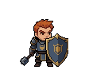
K13 Copper Fringe
A copper-haired guard in a blue Guild tunic.
PNG · LibreSprite
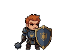
K15 Copper Guard
An auburn guard with a high belt and chest badge.
PNG · LibreSprite
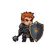
K16 Steel Clasp
A red-haired guard with a steel clasp on his shoulder strap.
PNG · LibreSprite